Drag the midnight line, or edit any time or date.

Device clock. Every time and date on this page starts from your device's clock. If it is off by a few minutes, everything shown here is off by the same amount. Turn on automatic date and time in your system settings to fix it.
Device timezone. Not used. Each city shows its own time zone, and the two dates come from UTC.
Timezone database. Each city's daylight-saving rules come from a database built into your browser. If a country changed its rules recently and your browser hasn't caught up, that city can be off by an hour. Updating your browser fixes it.
Midnight line. It is placed by longitude, so real time zone borders differ slightly. A city near the line can show a different date than its side of the line suggests.